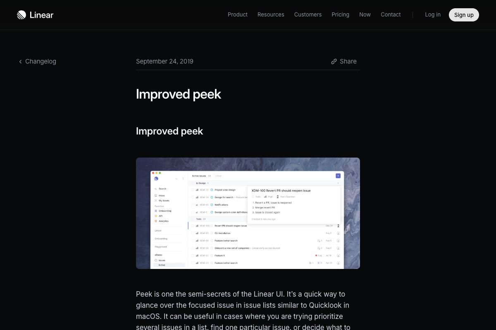
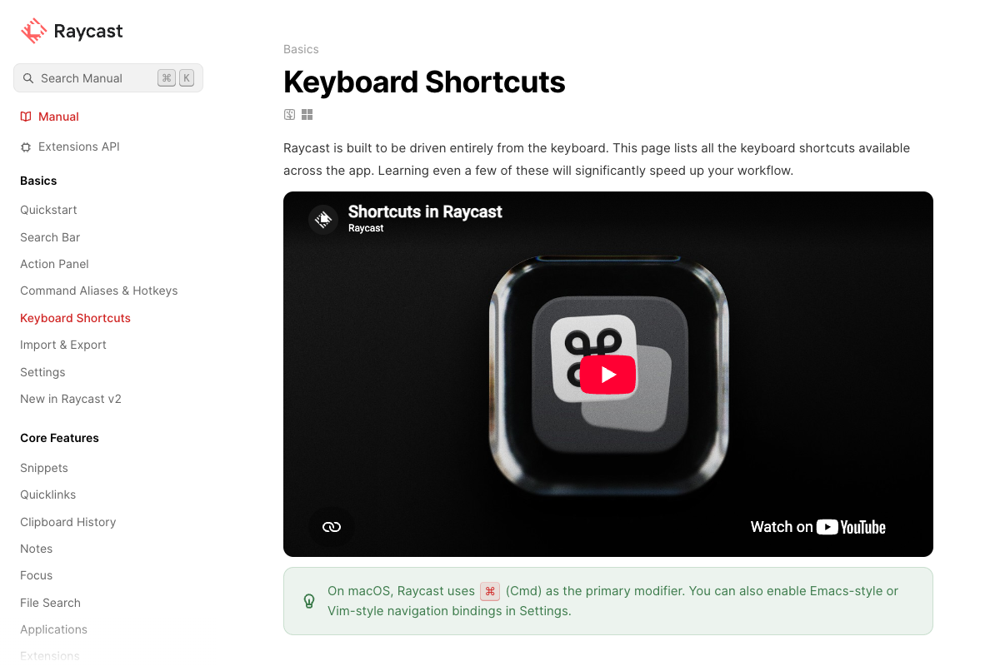

pattern
Peek opens and closes details quickly while keeping the current context
https://linear.app/changelog/2019-09-23-improved-peek

pattern
A consistent rule: Esc steps back to the previous view from the innermost state outward
https://manual.raycast.com/keyboard-shortcuts